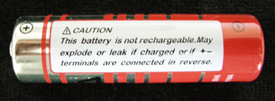

Module 4—Batteries and Balance
 Read
Read
What is the connection between electrolysis and the “recharging” that occurs within a rechargeable commercial cell? A rechargeable commercial cell does not allow new materials to enter or leave the cell. Therefore, the application of electrical energy used in recharging the cell must create a chemical change. The chemical change recreates the reactants of the spontaneous reaction that produces the flow of electrons. The spontaneous reaction that produces the flow of electrons is referred to as the discharge of the cell.
The reactions for the discharge of the cell and its recharging are reversible. The products of one process become the reactants for the next process. The process of discharging and recharging can be repeated many times, provided an energy source is available for the non-spontaneous recharging process, and that the half-reactions in the discharging process are reversible and recreate the reactants.
 Reflect on the Big Picture
Reflect on the Big Picture
Use the information in the Read section above to complete the following questions. Use complete descriptions. Where possible, make reference to the information provided to support your answer.
RBP 1. The discharge of a Ni-Cd rechargeable cell is described by the following half-reactions:
2 NiO(OH)(s) + 2 H2O(l) + 2 e– → 2 Ni(OH)2(s) + 2 OH–(aq) Eºnet = +0.49 V
Cd(s) + 2 OH–(aq) → Cd(OH)2(s) + 2 e– Eºnet = –0.81 V
Arrange the half-reactions to determine the net reaction and the net cell potential for the discharge of a Ni-Cd cell. What are the products of the recharging process, and what is the minimum voltage that must be applied to a recharging Ni-Cd cell?

The warning label reads “This battery is not rechargeable. May explode or leak if charged or it +- terminals are connected in reverse.”
RBP 2. The half-reactions for a common type of dry cell are shown below:
cathode: MnO2(s) + H2O(l) + 2 e– → Mn2O3(s) + 2 OH–(aq)
anode: Zn(s) → Zn2+(aq) + 2 e–
The cell shown in the photograph has a prominent warning label. Provide reasons for the warning shown in the picture, and explain why it is not physically possible to recharge this type of cell.
Save your answers in your course folder. Submit a copy of your answers to you teacher for feedback.
 Module 4: Lesson 3 Assignment
Module 4: Lesson 3 Assignment
Retrieve your copy of the Module 4: Lesson 3 Assignment that you saved to your computer earlier in this lesson. Complete all questions. Save your completed Assignment in your course folder and submit a copy to your teacher.